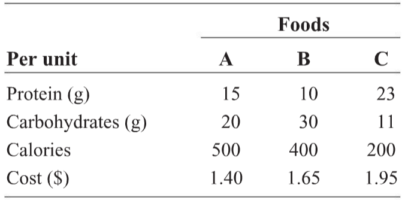

Graph the solution set to the system:
\(x - 3y \geq 6\)
\(x - y \leq 4\)
\(y \geq -5\)
Maximize \(z = 5x + 4y\) subject to
\(3x + 2y \leq 12\)
\(x + y \leq 5\)
\( x\geq 0, y \geq 0\)
A building supplies truck has a load capacity of 25,000 pounds.
A delivery requires at least 21 pallets of brick weighing 950 pounds each and at least 15 pallets of roofing material weighing 700 pounds each.
Express these restrictions with a system of inequalities.
The Hoover Steel Mill produces two grades of stainless steel, which is sold in 100-pound bars.
The standard grade is 90% steel and 10% chromium by weight, and the premium grade is 80% steel and 20% chromium.
The company has 80,000 pounds of steel and 12,000 pounds of chromium on hand.
If the price per bar is $90 for the standard grade and $100 for the premium grade, set up a linear programming problem to determine
how much of each grade should it produce to maximize revenue? You do not need to solve this.
The Nut Factory produces a mixture of peanuts and cashews.
It guarantees that at least one third of the total weight is cashews.
A retailer wants 1200 pounds or more of the mixture.
The peanuts cost the Nut Factory $0.75 per pound, and the cashews cost $1.40 per pound.
Find the amount of each kind of nut the company should use to minimize the cost if 600 pounds of peanuts are available.
Set up the problem. You do not need to solve it.
A school cafeteria serves three foods for lunch: A, B, and C.
There is pressure on the cafeteria director to reduce lunch costs.
Help the director by finding the quantities of each food that will minimize costs and still maintain the desired nutritional level.
The three foods have the following nutritional characteristics:

A lunch must contain at least 80 grams of protein, 95 grams of carbohydrates, and 800 calories.
How many units of each food should be served to minimize cost? Set up the problem. Do not solve.
Finance Problems
A loan, principal and interest, was paid with $1190.40.
The loan was made at 8% simple interest for 3 years. How much was borrowed?
Missy invested $1000 at 6.8% compounded quarterly. Can she expect it to double in value after ten years?
Find the effective rate (APY) of 7.2% (APR) compounded monthly.
Which is the better investment, one that pays 8% compounded quarterly or one that pays 8.3% compounded annually?
The price of an automobile is now $15,000.
What would be the anticipated price of that automobile in 2 years’ time if prices are expected to increase at an annual rate of 8%?
Anticipating college tuition for their child in 10 years, the Heggens want to deposit a lump sum of money into an
account that will provide $96,000 at the end of that 10-year period.
The account selected pays 6.2%, compounded semiannually. How much should they deposit?
Solutions
$960.00
No, the amount in the account is $1962.63.
7.442%
8.3% compounded annually - the APY (or effective rate) of the quarterly compounding is 8.24%